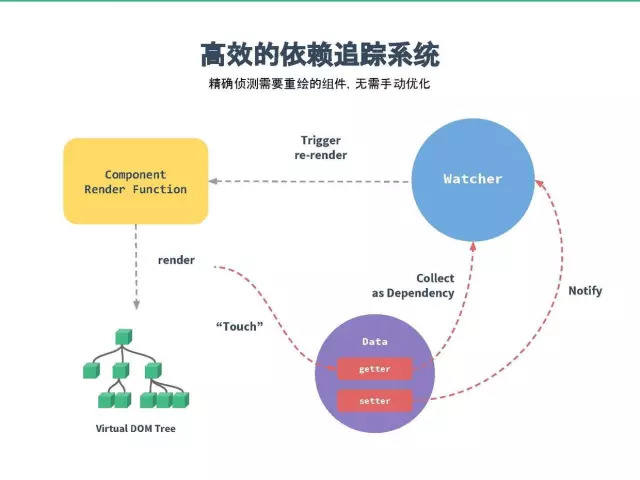

title: 我对vue的理解
date: 2018-06-1 11:10:45
tags: Vue
archives: JS
人生时苦，所以要做一个简单的人，
常想一二，不思八九，
越活越带感。
vue响应式原理
用过vue写过项目或者看过vue的同学在被问到“vue的响应式原理时”可能都会直接说： Vue 是通过Object.defineProperty方法把data对象的全部属性转化成getter/setter，当属性被访问或者被修改时通知变化。
Object.defineProperty的API的定义？这个就是ES5改变属性的值的一个API！这么回答肯定是有问题的，MDN的定义是：
Object.defineProperty()方法会直接在一个对象上定义一个新属性，或者修改一个对象的现有属性，并返回这个对象。
再看vue官网介绍的响应式原理图。

首先通过渲染触发了Data的getter进行依赖收集，源码里有个一Deps订阅者，在数据变化时会通知所有的Watcher观察者，也就是说，在data变化时会触发它的setter，setter通知Watcher，Watcher通知组件执行Render Function，函数内再根据diff算法来实现视图的更新（render函数会根据内部的VDOM，也就是vue的虚拟DOM生成DOM树，diff就是新VDOM树与旧VDOM树进行深度对比(vue源码是比较新旧两个列表的vm的数据状态)，算出施加到真实DOM上的改动，然后通过createDocumentFragment创建对应的node节点(Vue内部的nodeType判断)再appendChild进index.html）。
vue的MVVM
再分析vue的MVVM的实现

new MVVM()也就是vue的实例 new Vue()，是vue的入口函数,可以理解成构造函数Vue的实例。
Observer 数据监听器，能够对数据对象的所有属性进行监听，如有变动可以通知订阅者。
Watcher订阅者，作为连接Observer和Compile的桥梁，能够订阅并收到每个属性变动的通知，执行指令绑定的相应回调函数。
Compile 指令解析器，对每个元素节点的指令进行扫描和解析，根据指令模板替换数据和绑定相应的更新数据。
Dep 消息订阅器，observer内部维护的一个数组，用来收集订阅者Wacher，数据变动触发notify函数，再调用订阅者的update方法。
###new MVVM()
vue源码内的英文注释都是尤大大加的，对于英文不好的我只能查字典了。
先看vue的initData 这个就是new Vue内初始化的数据，内部将数据进行Observer监听数据变化。
/*初始化data*/
function initData (vm: Component) {
/*得到data数据*/
let data = vm.$options.data
data = vm._data = typeof data === 'function'
? getData(data, vm)
: data || {}
/*对对象类型进行严格检查，只有当对象是纯javascript对象的时候返回true*/
if (!isPlainObject(data)) {
data = {}
process.env.NODE_ENV !== 'production' && warn(
'data functions should return an object:\n' +
'https://vuejs.org/v2/guide/components.html#data-Must-Be-a-Function',
vm
)
}
// proxy data on instance
/*遍历data对象*/
const keys = Object.keys(data)
const props = vm.$options.props
let i = keys.length
//遍历data中的数据
while (i--) {
/*保证data中的key不与props中的key重复，props优先，如果有冲突会产生warning*/
if (props && hasOwn(props, keys[i])) {
process.env.NODE_ENV !== 'production' && warn(
`The data property "${keys[i]}" is already declared as a prop. ` +
`Use prop default value instead.`,
vm
)
} else if (!isReserved(keys[i])) {
/*判断是否是保留字段*/
/*这里是我们前面讲过的代理，将data上面的属性代理到了vm实例上*/
proxy(vm, `_data`, keys[i])
}
}
// observe data
/*从这里开始我们要observe了，开始对数据进行绑定，这里有尤大大的注释asRootData，这步作为根数据，下面会进行递归observe进行对深层对象的绑定。*/
observe(data, true /* asRootData */)
}
function getData (data: Function, vm: Component): any {
try {
return data.call(vm)
} catch (e) {
handleError(e, vm, `data()`)
return {}
}
}
内部的实现还是很复杂的，再说说proxy函数，像initState,initProps有时间可以自己去看看。
export function proxy (target: Object, sourceKey: string, key: string) {
sharedPropertyDefinition.get = function proxyGetter () {
return this[sourceKey][key]
}
sharedPropertyDefinition.set = function proxySetter (val) {
this[sourceKey][key] = val
}
Object.defineProperty(target, key, sharedPropertyDefinition)
}
代理函数，实现数据代理，vm.options -> vm._data.options，可以理解为;
proxy: function(key, setter, getter) {
var me = this;
setter = setter ||
Object.defineProperty(_vm, key, {
configurable: false, //不能再define定义
enumerable: true,
get: function proxyGetter() {
return _vm._data[key];
},
set: function proxySetter(newVal) {
_vm._data[key] = newVal;
}
});
},
###Observer监听者
Oberver的作用就是遍历对象的属性进行双向绑定。
export class Observer {
value: any;
dep: Dep;
vmCount: number; // number of vms that has this object as root $data
constructor (value: any) {
this.value = value
this.dep = new Dep()
this.vmCount = 0
/*
将Observer实例绑定到data的__ob__属性上面去，之前说过observe的时候会先检测是否已经有__ob__对象存放Observer实例了，def方法定义可以参考https://github.com/vuejs/vue/blob/dev/src/core/util/lang.js#L16
*/
def(value, '__ob__', this)
if (Array.isArray(value)) {
/*
如果是数组，将修改后可以截获响应的数组方法替换掉该数组的原型中的原生方法，达到监听数组数据变化响应的效果。
这里如果当前浏览器支持__proto__属性，则直接覆盖当前数组对象原型上的原生数组方法，如果不支持该属性，则直接覆盖数组对象的原型。
*/
const augment = hasProto
? protoAugment /*直接覆盖原型的方法来修改目标对象*/
: copyAugment /*定义（覆盖）目标对象或数组的某一个方法*/
augment(value, arrayMethods, arrayKeys)
/*Github:https://github.com/answershuto*/
/*如果是数组则需要遍历数组的每一个成员进行observe*/
this.observeArray(value)
} else {
/*如果是对象则直接walk进行绑定*/
this.walk(value)
}
}
/**
* Walk through each property and convert them into
* getter/setters. This method should only be called when
* value type is Object.
*/
walk (obj: Object) {
const keys = Object.keys(obj)
/*walk方法会遍历对象的每一个属性进行defineReactive绑定*/
for (let i = 0; i < keys.length; i++) {
defineReactive(obj, keys[i], obj[keys[i]])
}
}
/**
* Observe a list of Array items.
*/
observeArray (items: Array<any>) {
/*数组需要便利每一个成员进行observe*/
for (let i = 0, l = items.length; i < l; i++) {
observe(items[i])
}
}
}
defineReactive作用是通过defineProperty给数据定义getter\setter，当数据变动时通知Deps订阅器，映射给Watcher观察者对视图做变更。
Object.defineProperty(obj, key, {
enumerable: true,
configurable: true,
get: function reactiveGetter () {
const value = getter ? getter.call(obj) : val
if (Dep.target) {
dep.depend()
if (childOb) {
childOb.dep.depend()
if (Array.isArray(value)) {
dependArray(value)
}
}
}
return value
},
set: function reactiveSetter (newVal) {
const value = getter ? getter.call(obj) : val
/* eslint-disable no-self-compare */
if (newVal === value || (newVal !== newVal && value !== value)) {
return
}
/* eslint-enable no-self-compare */
if (process.env.NODE_ENV !== 'production' && customSetter) {
customSetter()
}
if (setter) {
setter.call(obj, newVal)
} else {
val = newVal
}
// 如果是新值并且是object的话就进行监听
childOb = !shallow && observe(newVal)
dep.notify() // 通知订阅者
}
})
###Deps订阅器
Deps订阅器的实现可以简单这样理解，就是数组subs ，可以订阅多个观察者，依赖收集后Deps也会存在多个Watcher对象，在数据变更时通知所有的Watcher。
var uid = 0;
function Dep() {
this.id = uid++;
this.subs = []; // 这个就是订阅器
}
Dep.prototype = {
addSub: function(sub) {
this.subs.push(sub);
},
depend: function() {
Dep.target.addDep(this);
},
removeSub: function(sub) {
var index = this.subs.indexOf(sub);
if (index != -1) {
this.subs.splice(index, 1);
}
},
notify: function() {
this.subs.forEach(function(sub) {
sub.update();
});
}
};
###Watcher 观察者
Watcher就是一个观察对象，依赖收集以后Watcher对象会被保存在Deps中。
export default class Watcher {
vm: Component;
expression: string;
cb: Function;
id: number;
deep: boolean;
user: boolean;
lazy: boolean;
sync: boolean;
dirty: boolean;
active: boolean;
deps: Array<Dep>;
newDeps: Array<Dep>;
depIds: ISet;
newDepIds: ISet;
getter: Function;
value: any;
constructor (
vm: Component,
expOrFn: string | Function,
cb: Function,
options?: Object
) {
this.vm = vm
/*_watchers存放订阅者实例*/
vm._watchers.push(this)
// options
if (options) {
this.deep = !!options.deep
this.user = !!options.user
this.lazy = !!options.lazy
this.sync = !!options.sync
} else {
this.deep = this.user = this.lazy = this.sync = false
}
this.cb = cb
this.id = ++uid // uid for batching
this.active = true
this.dirty = this.lazy // for lazy watchers
this.deps = []
this.newDeps = []
this.depIds = new Set()
this.newDepIds = new Set()
this.expression = process.env.NODE_ENV !== 'production'
? expOrFn.toString()
: ''
// parse expression for getter
/*把表达式expOrFn解析成getter*/
if (typeof expOrFn === 'function') {
this.getter = expOrFn
} else {
this.getter = parsePath(expOrFn)
if (!this.getter) {
this.getter = function () {}
process.env.NODE_ENV !== 'production' && warn(
`Failed watching path: "${expOrFn}" ` +
'Watcher only accepts simple dot-delimited paths. ' +
'For full control, use a function instead.',
vm
)
}
}
this.value = this.lazy
? undefined
: this.get()
}
/**
* Evaluate the getter, and re-collect dependencies.
*/
/*获得getter的值并且重新进行依赖收集*/
get () {
/*将自身watcher观察者实例设置给Dep.target，用以依赖收集。*/
pushTarget(this)
let value
const vm = this.vm
/*
执行了getter操作，看似执行了渲染操作，其实是执行了依赖收集。
在将Dep.target设置为自生观察者实例以后，执行getter操作。
譬如说现在的的data中可能有a、b、c三个数据，getter渲染需要依赖a跟c，
那么在执行getter的时候就会触发a跟c两个数据的getter函数，
在getter函数中即可判断Dep.target是否存在然后完成依赖收集，
将该观察者对象放入闭包中的Dep的subs中去。
*/
if (this.user) {
try {
value = this.getter.call(vm, vm)
} catch (e) {
handleError(e, vm, `getter for watcher "${this.expression}"`)
}
} else {
value = this.getter.call(vm, vm)
}
// "touch" every property so they are all tracked as
// dependencies for deep watching
/*如果存在deep，则触发每个深层对象的依赖，追踪其变化*/
if (this.deep) {
/*递归每一个对象或者数组，触发它们的getter，使得对象或数组的每一个成员都被依赖收集，形成一个“深（deep）”依赖关系*/
traverse(value)
}
/*将观察者实例从target栈中取出并设置给Dep.target*/
popTarget()
this.cleanupDeps()
return value
}
/**
* Add a dependency to this directive.
*/
/*添加一个依赖关系到Deps集合中*/
addDep (dep: Dep) {
const id = dep.id
if (!this.newDepIds.has(id)) {
this.newDepIds.add(id)
this.newDeps.push(dep)
if (!this.depIds.has(id)) {
dep.addSub(this)
}
}
}
/**
* Clean up for dependency collection.
*/
/*清理依赖收集*/
cleanupDeps () {
/*移除所有观察者对象*/
let i = this.deps.length
while (i--) {
const dep = this.deps[i]
if (!this.newDepIds.has(dep.id)) {
dep.removeSub(this)
}
}
let tmp = this.depIds
this.depIds = this.newDepIds
this.newDepIds = tmp
this.newDepIds.clear()
tmp = this.deps
this.deps = this.newDeps
this.newDeps = tmp
this.newDeps.length = 0
}
/**
* Subscriber interface.
* Will be called when a dependency changes.
*/
/*
调度者接口，当依赖发生改变的时候进行回调。
*/
update () {
/* istanbul ignore else */
// 1. 每次调用run()的时候会触发相应属性的getter
// getter里面会触发dep.depend()，继而触发这里的addDep
// 2. 假如相应属性的dep.id已经在当前watcher的depIds里，说明不是一个新的属性，仅仅是改变了其值而已
// 则不需要将当前watcher添加到该属性的dep里
// 3. 假如相应属性是新的属性，则将当前watcher添加到新属性的dep里
// 如通过 vm.child = {name: 'a'} 改变了 child.name 的值，child.name 就是个新属性
// 则需要将当前watcher(child.name)加入到新的 child.name 的dep里
// 因为此时 child.name 是个新值，之前的 setter、dep 都已经失效，如果不把 watcher 加入到新的 child.name 的dep中
// 通过 child.name = xxx 赋值的时候，对应的 watcher 就收不到通知，等于失效了
// 4. 每个子属性的watcher在添加到子属性的dep的同时，也会添加到父属性的dep
// 监听子属性的同时监听父属性的变更，这样，父属性改变时，子属性的watcher也能收到通知进行update
// 这一步是在 this.get() --> this.getVMVal() 里面完成，forEach时会从父级开始取值，间接调用了它的getter
// 触发了addDep(), 在整个forEach过程，当前wacher都会加入到每个父级过程属性的dep
// 例如：当前watcher的是'child.child.name', 那么child, child.child, child.child.name这三个属性的dep都会加入当前watcher
if (this.lazy) {
this.dirty = true
} else if (this.sync) {
/*同步则执行run直接渲染视图*/
this.run()
} else {
/*异步推送到观察者队列中，由调度者调用。*/
queueWatcher(this)
}
}
/**
* Scheduler job interface.
* Will be called by the scheduler.
*/
/*
调度者工作接口，将被调度者回调。
*/
run () {
if (this.active) {
const value = this.get()
if (
value !== this.value ||
// Deep watchers and watchers on Object/Arrays should fire even
// when the value is the same, because the value may
// have mutated.
/*
即便值相同，拥有Deep属性的观察者以及在对象／数组上的观察者应该被触发更新，因为它们的值可能发生改变。
*/
isObject(value) ||
this.deep
) {
// set new value
const oldValue = this.value
/*设置新的值*/
this.value = value
/*触发回调渲染视图*/
if (this.user) {
try {
this.cb.call(this.vm, value, oldValue)
} catch (e) {
handleError(e, this.vm, `callback for watcher "${this.expression}"`)
}
} else {
this.cb.call(this.vm, value, oldValue)
}
}
}
}
/**
* Evaluate the value of the watcher.
* This only gets called for lazy watchers.
*/
/*获取观察者的值*/
evaluate () {
this.value = this.get()
this.dirty = false
}
/**
* Depend on all deps collected by this watcher.
*/
/*收集该watcher的所有deps依赖*/
depend () {
let i = this.deps.length
while (i--) {
this.deps[i].depend()
}
}
/**
* Remove self from all dependencies' subscriber list.
*/
/*将自身从所有依赖收集订阅列表删除*/
teardown () {
if (this.active) {
// remove self from vm's watcher list
// this is a somewhat expensive operation so we skip it
// if the vm is being destroyed.
/*从vm实例的观察者列表中将自身移除，由于该操作比较耗费资源，所以如果vm实例正在被销毁则跳过该步骤。*/
if (!this.vm._isBeingDestroyed) {
remove(this.vm._watchers, this)
}
let i = this.deps.length
while (i--) {
this.deps[i].removeSub(this)
}
this.active = false
}
}
}
###Compile
Compile也就是指令解析器，这个和一般的模板引擎的区别都不大，大部分通过正则判断内部指令（普通指令和事件指令）。这个就简单说道这里。
##总结
要学到精髓还得多看看源码，看完也可以学到很多。整体架构，逻辑API的依赖等还需要仔细理解学习。
再次感谢尤大大！